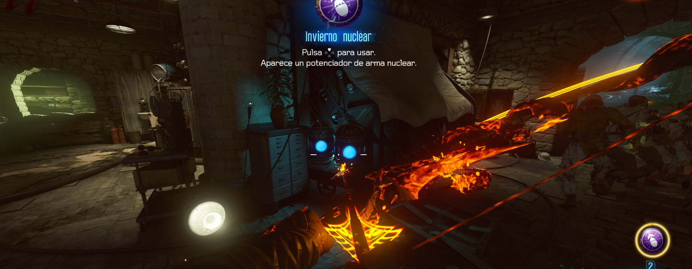
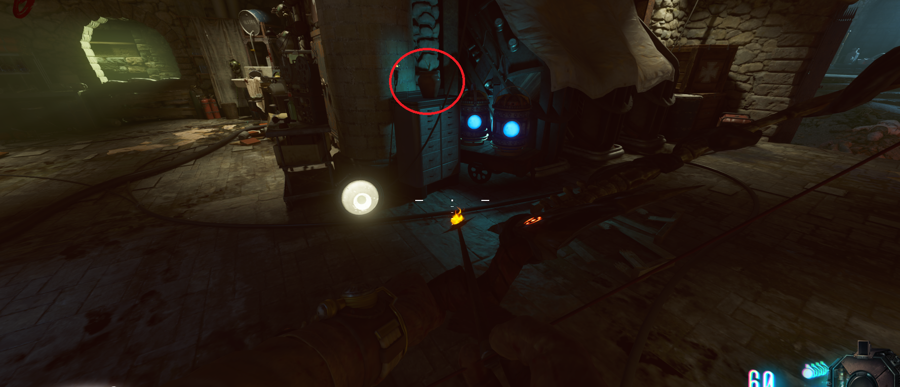
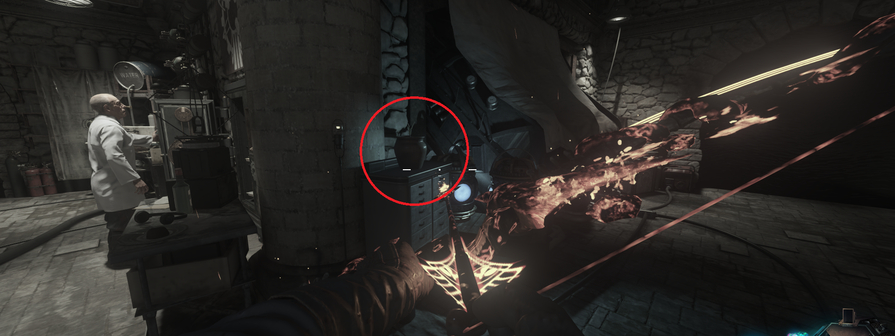
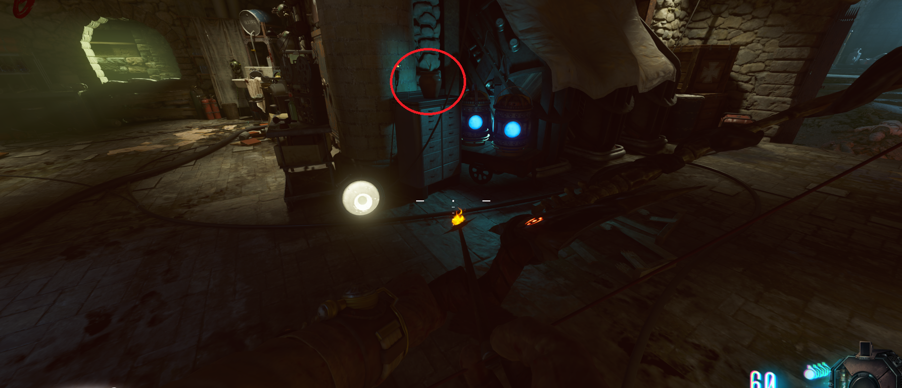
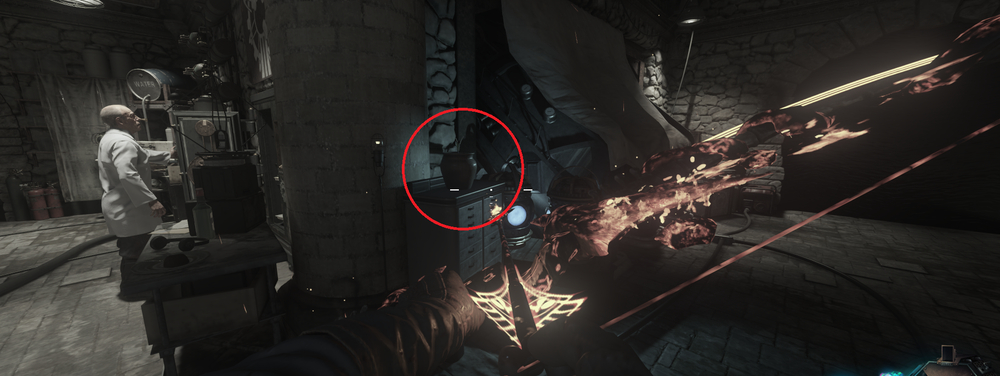

Chicle gratis (Der Eisendrachen)

Tendremos que recoger la planta en la sala del teleporter antes de viajar en el tiempo

En el pasado la volveremos a colocar en el mismo sitio.

Al volver la planta habrá crecido y, al interactuar con ella, obtendremos el chicle.


En el pasado la volveremos a colocar en el mismo sitio.

Al volver la planta habrá crecido y, al interactuar con ella, obtendremos el chicle.